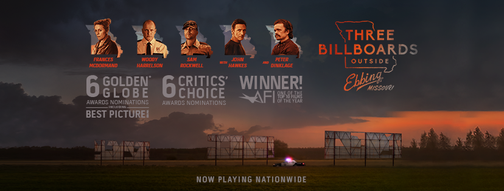

«Три білборди на кордоні Еббінг, Міссурі»
- Жанр: драма, кінокомедія
- Режисер: Мартін Макдона
- У головних ролях: Френсіс Макдорманд, Пітер Дінклейдж, Джон Гоукс, Вуді Гаррельсон, Сем Роквелл
- Країна: США, Велика Британія
- Дата виходу: 10 вересня 2017
«Три білборди за межами Еббінга, Міссурі» — кримінальна драма з елементами комедії режисера Мартіна Макдони. Зйомки фільму проходили в США.

Більш ніж півроку тому невідомий злочинець згвалтував і жорстоко вбив Анджелу Хейз поруч з дорогою, яка веде від їхнього будинку до невеликого провінційного містечка Еббінг, штат Міссурі. Не в силах більше чекати результатів та зайшовши в глухий кут розслідування невтішна мати орендує три білборди, розташованих уздовж злощасної дороги, і розміщує там кілька фраз, які різко критикують місцевого шефа поліції. Незважаючи на те, що білборди розташовані далеко від основної траси, ця подія не залишається непоміченою і через деякий час між озлобленою на весь світ жінкою і місцевими поліцейськими спалахує запекле протистояння.
1 2 3 4 5